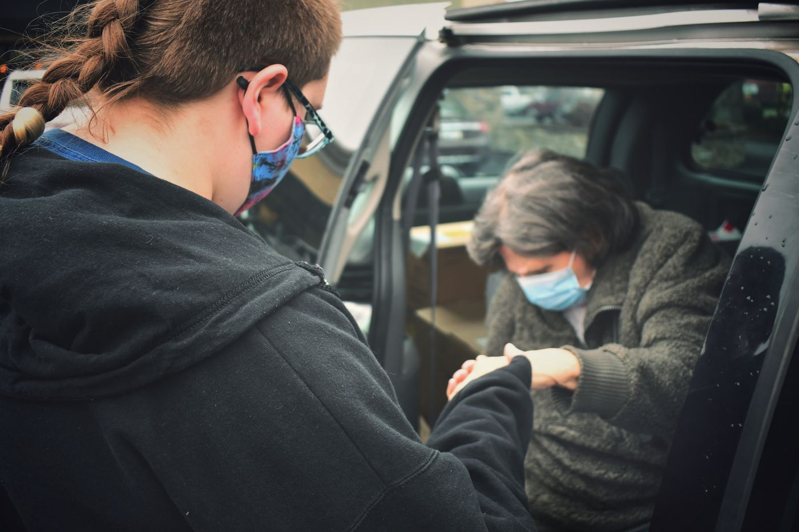
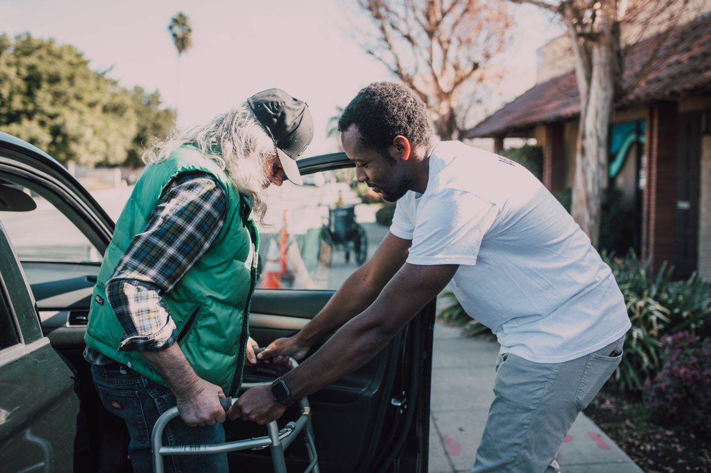
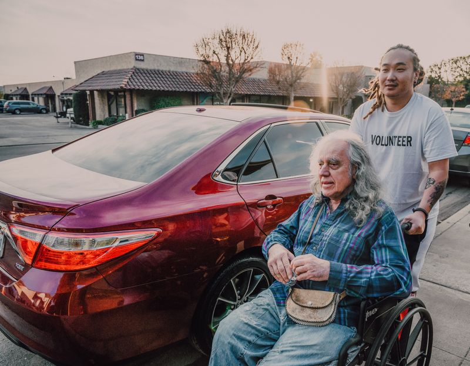

01
Calidad humana y empatía
Entendemos la vulnerabilidad de las situaciones que atraviesan los pacientes. Priorizamos el buen trato, el respeto, la amabilidad y la contención en cada viaje.
Traslado de pacientes para ART en el norte y oeste del Gran Buenos Aires.
Logística y traslados para ART
Brindamos soluciones de traslado de pacientes para ART, combinando experiencia, puntualidad y calidad humana en cada servicio.
Nosotros
Traslados WK es una empresa especializada en el traslado seguro y eficiente de pacientes, orientada a cubrir las necesidades específicas de las ART.
Contamos con un sólido equipo de profesionales, un centro de atención telefónica con operadores capacitados y una flota distribuida estratégicamente para dar respuestas ágiles, con calidad operativa y humana.

Nuestra trayectoria
Iniciamos la actividad con una base de tres vehículos.
Una década de crecimiento y mejora continua en el sector.
Capacidad de hasta 15 y 20 unidades, según el área operativa.
Qué nos diferencia
Cada viaje combina rigor operativo con trato humano. Estos son los criterios con los que trabajamos todos los días.

Entendemos la vulnerabilidad de las situaciones que atraviesan los pacientes. Priorizamos el buen trato, el respeto, la amabilidad y la contención en cada viaje.
Un exigente criterio de responsabilidad y puntualidad en nuestros choferes, con esquemas operativos que cubren con flexibilidad la demanda permanente.
Cada móvil y cada chofer cuentan con los elementos de protección y sanitización necesarios para resguardar la seguridad y el bienestar del pasajero.
Trabajamos bajo estrictos criterios de responsabilidad, eficacia y control de procesos, con un alto nivel de confidencialidad para nuestros clientes.
Servicios
Todo lo que una ART necesita para derivar a sus pacientes con tranquilidad: el viaje, la coordinación, los vehículos y el trato.

Servicio especializado para cubrir las necesidades específicas de las ART, con traslados seguros, eficientes y accesibles.
Coordinación desde un centro de atención telefónica con operadores capacitados para la demanda diaria y las eventualidades.
Una flota en constante expansión, con choferes profesionales y puntuales, equipados con elementos de protección y sanitización.
Calidad humana, buen trato, respeto y confidencialidad, con altos estándares éticos y operativos.
Cobertura operativa
Operamos habitualmente en distintos partidos del Gran Buenos Aires, con una distribución orientada a brindar respuestas ágiles y eficientes.
Capacidad operativa
Crecimos desde una base de tres móviles hasta una estructura capaz de acompañar la demanda permanente de las ART.
Unidades al inicio y capacidad actual según el área operativa
* La capacidad de hasta 15 y 20 unidades depende del área operativa y no representa necesariamente la flota activa en forma permanente.
Trabajan con nosotros
En Traslados WK trabajamos para brindar soluciones de traslado confiables, con responsabilidad profesional y un compromiso constante con cada paciente.
Contacto
Contanos qué necesitás y te enviamos la información del servicio.